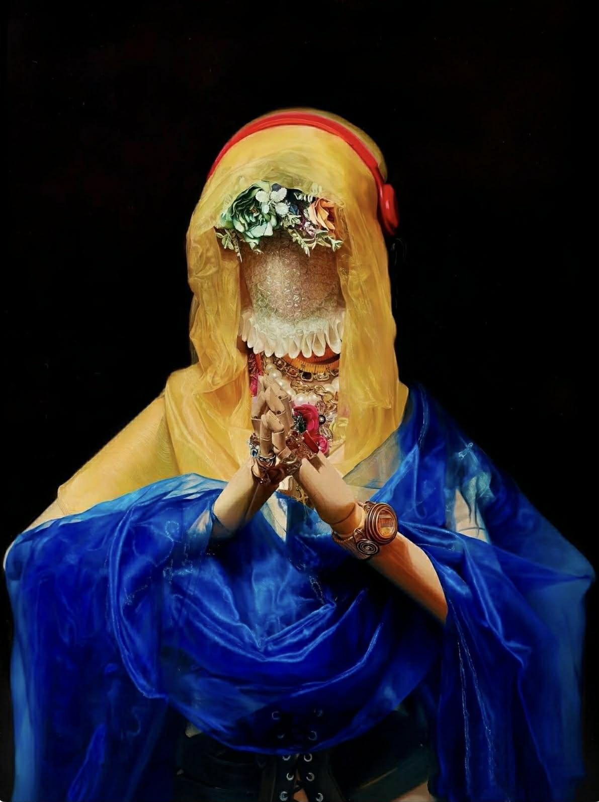
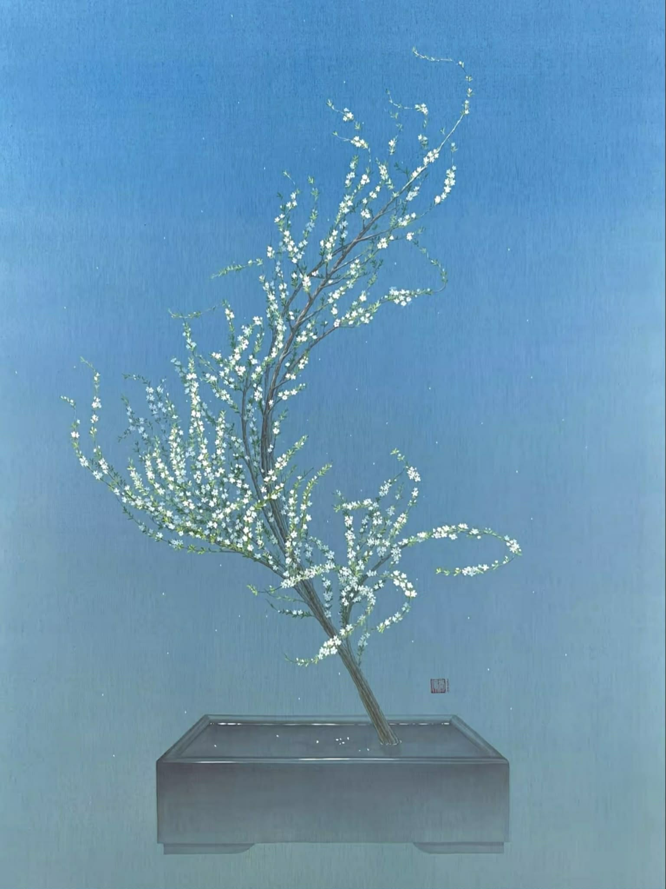
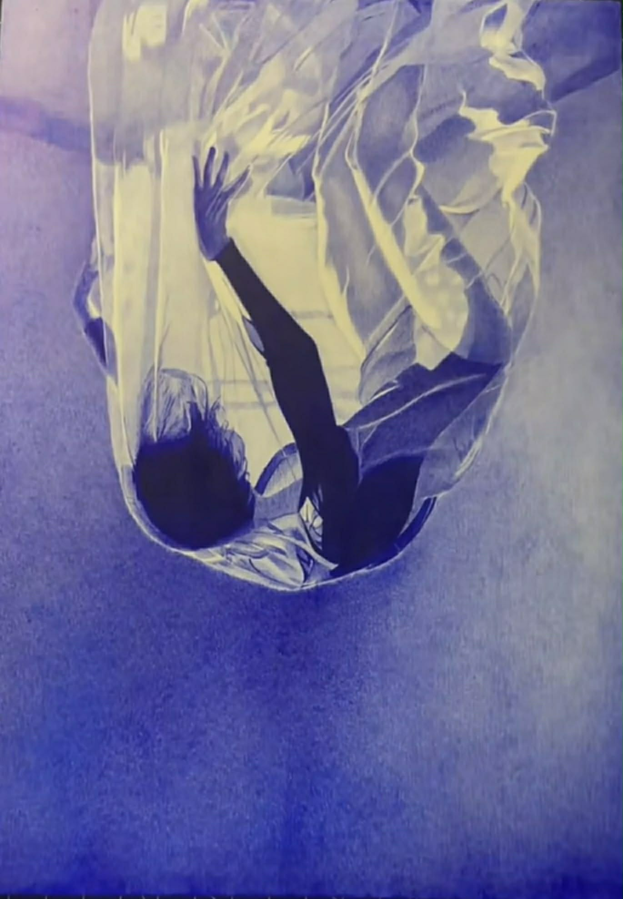

One artwork that inspires me is 'Prayer' by An Qi. I chose this artwork because it has a strong visual impact on me. I was impressed by the clear contrast, realistis textures, and bold use of color. The combination of blue, yellow, and dark colors makes the artwork very memorable. It shows me how contrast, color, and texture can work together to create a powerful visual effect.
Image attribution: "Prayer" by An Qi
Learn more about “Prayer” by An Qi

I chose this artwork by Hmie because I really like its colors and peaceful feeling. The white snow plum blossoms stand out against the blue background, which makes the whole image feel soft and calm. This artwork inspires me because it shows how a simple color palette can create a gentle and quiet mood.
Image attribution: Artwork by Hmie Art

I chose this artwork by Soda Art because of the strong emotion it creates. The curtain-like form, colors, and surrounding space make me feel trapped, uncomfortable, and overwhelmed. I was also impressed by how the artist created this feeling using a ballpoint pen. This work inspires me because it shows how material, composition, and atmosphere can communicate emotion.
Image attribution: Ballpoint pen artwork by Soda Art
While creating this Inspiration Page, I learned how to organize images, descriptions, alt text, attribution, and external links in one HTML page. One thing I noticed about my three inspirations is that they all use color and composition to create a strong mood, even though their styles are very different. An Qi's work feels bold and dramatic, Hmie's painting feels calm and gentle, and Soda Art's drawing feels more uncomfortable and emotional.The most difficult part for me was working with image files and relative paths. I learned that the images need to be saved inside the img folder and that the file names in my HTML must match the actual image names exactly. I also learned how important alt text is because it should describe the most useful visual information instead of only giving my personal opinion. Creating external hyperlinks was also useful because I had to find an appropriate source for each artist. Overall, I am satisfied with the page because I was able to include all three artists, images, descriptions, alt text, attribution, and links. This project made me more confident using HTML. And if I had more time, I would improve the layout and spacing after learning more CSS.